Hello!
My name is Ciani Foy and I am a UX/UI designer with a background in Human-Computer Interaction and Communication Design. I am passionate about all aspects of design, but specifically accessible interfaces and a seamless digital experience.
At the center of UX design, I aim to empathize with users, understand their core needs, and solve problems that will positively impact their experience with the cultivated product.
Additionally, I work in a variety of other mediums including branding, digital art, photography, and fashion design.
Fun Facts About Me:
- 🏔 I love hiking and being surrounded by nature
- ☕️ My drink of choice will always be a chai latte
- ✈️ I love to travel and immerse myself in cultures outside of my own
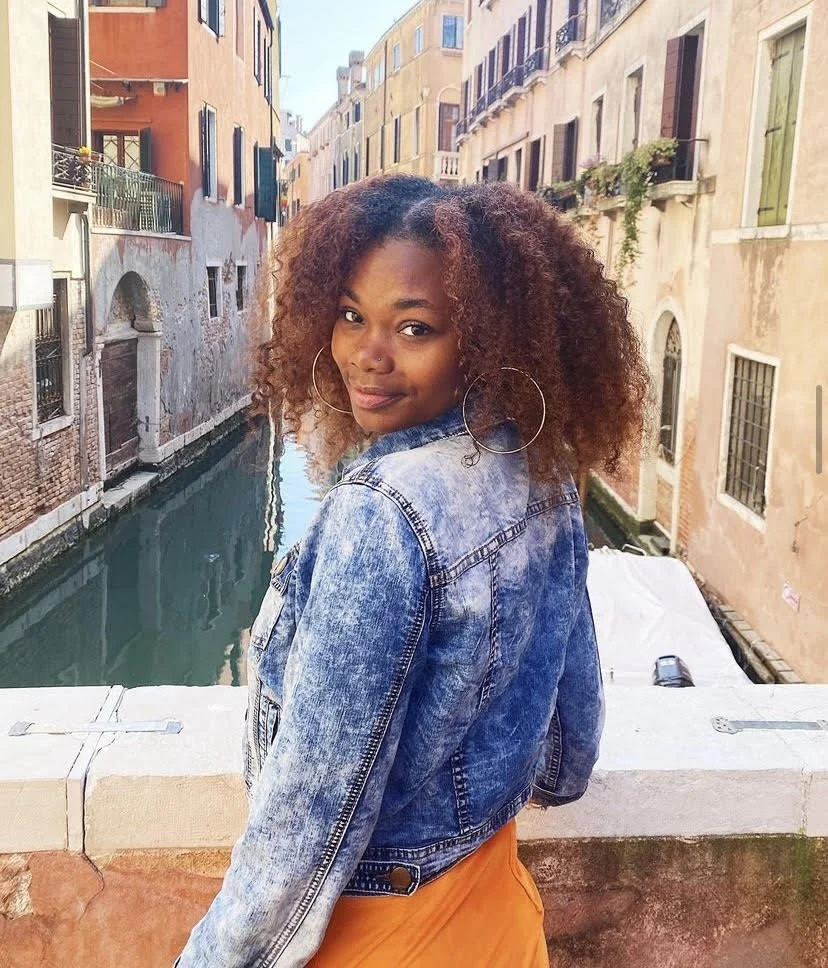
Design DNA
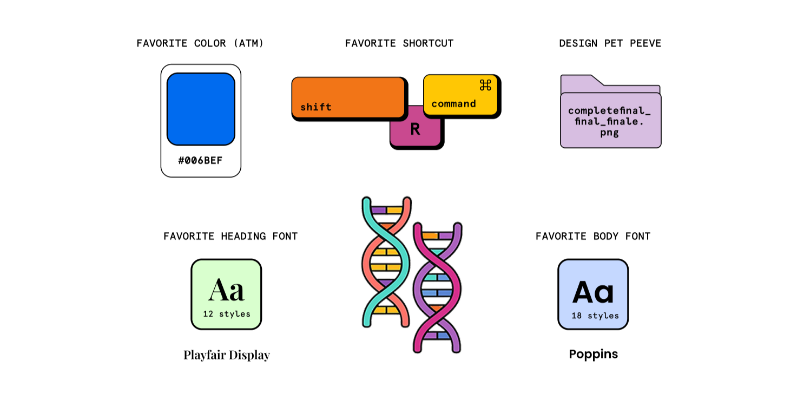
Travel Diary
A collection of some of the places I have traveled to.
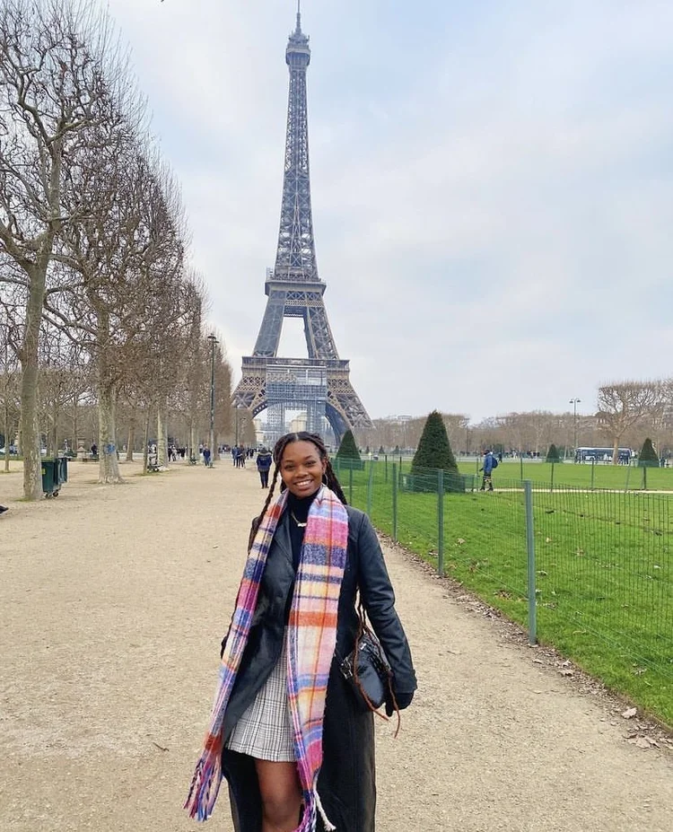
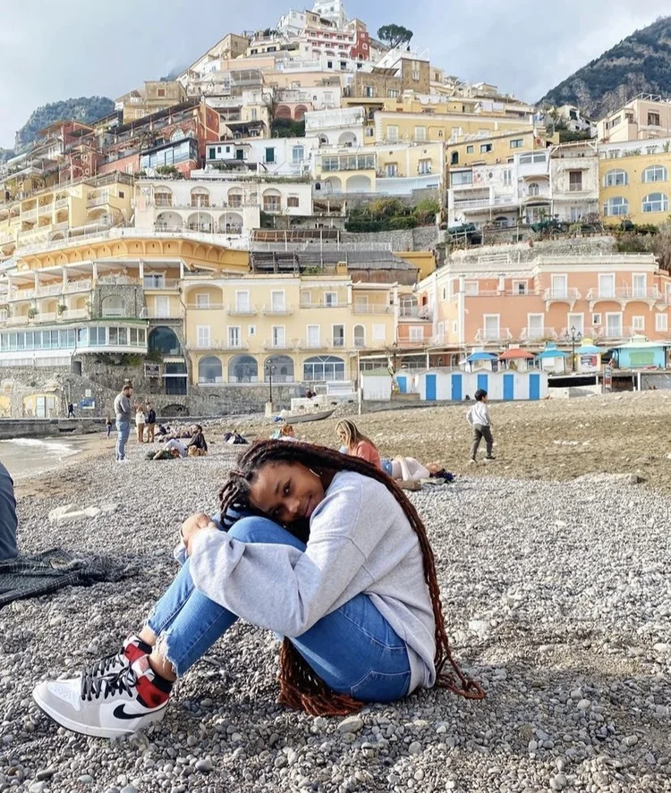
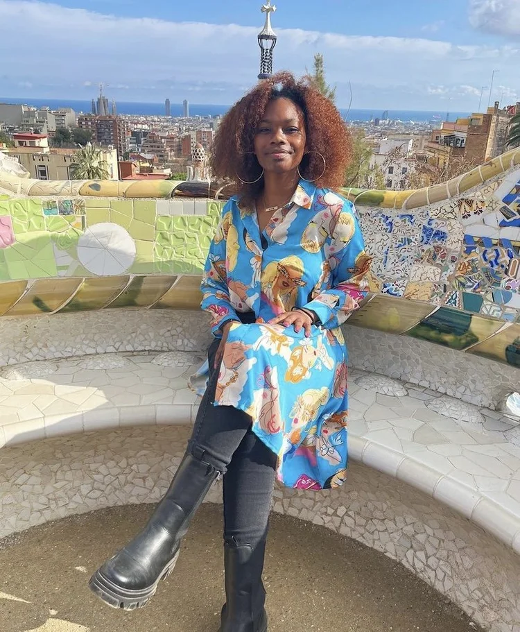
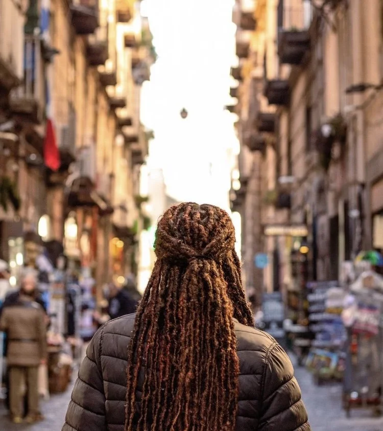
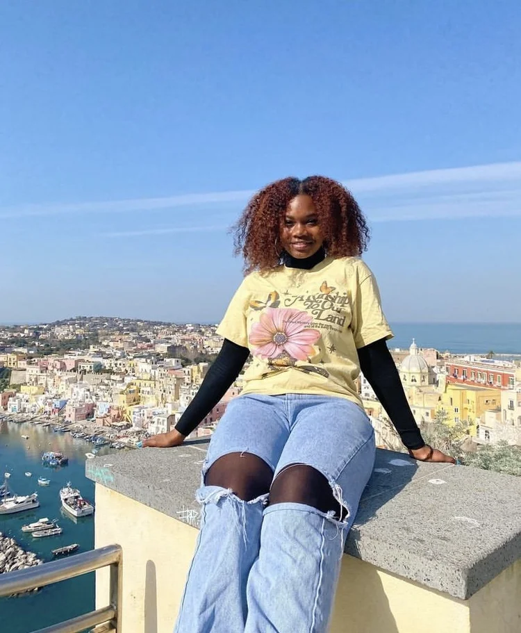
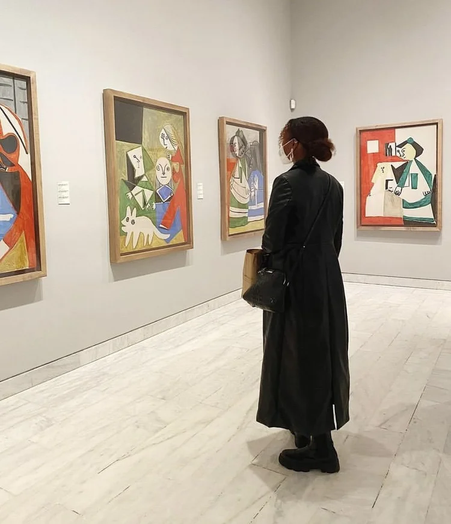
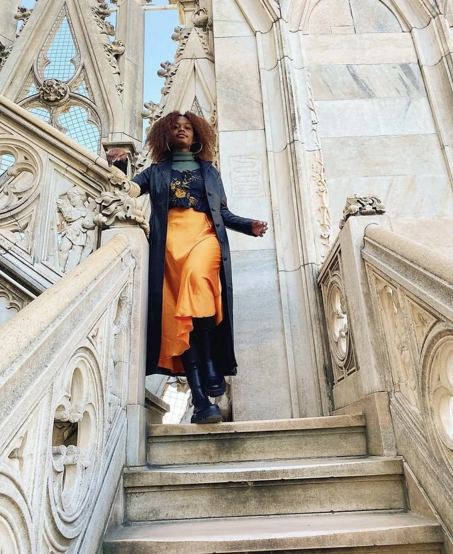
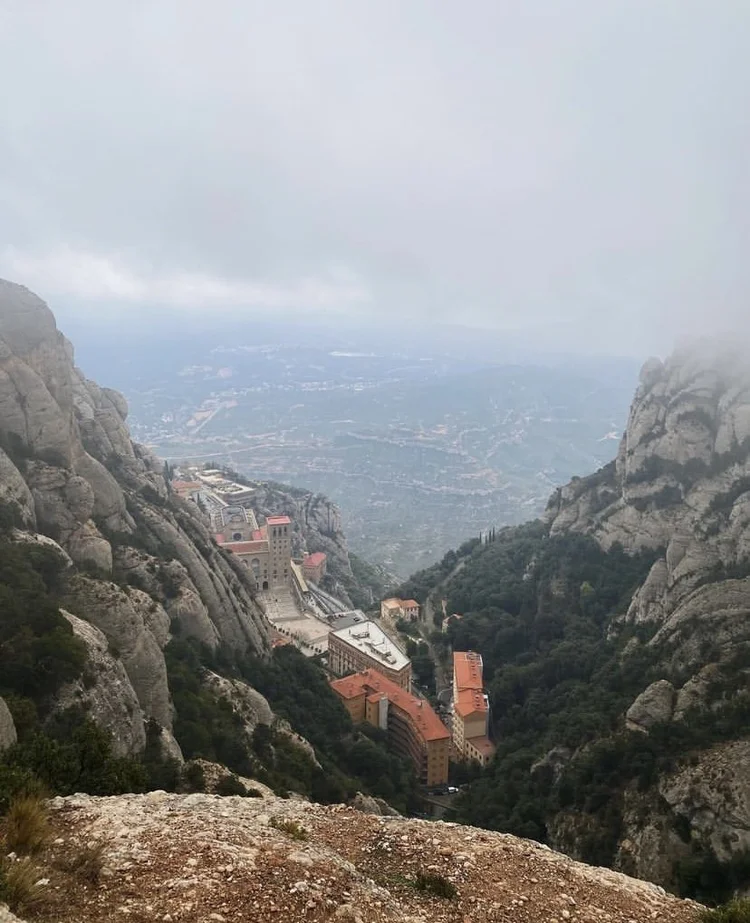
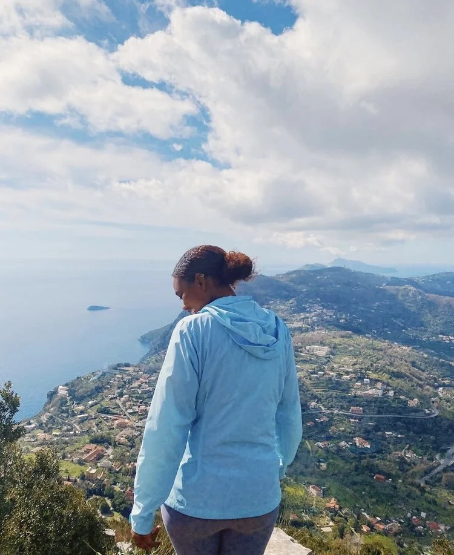
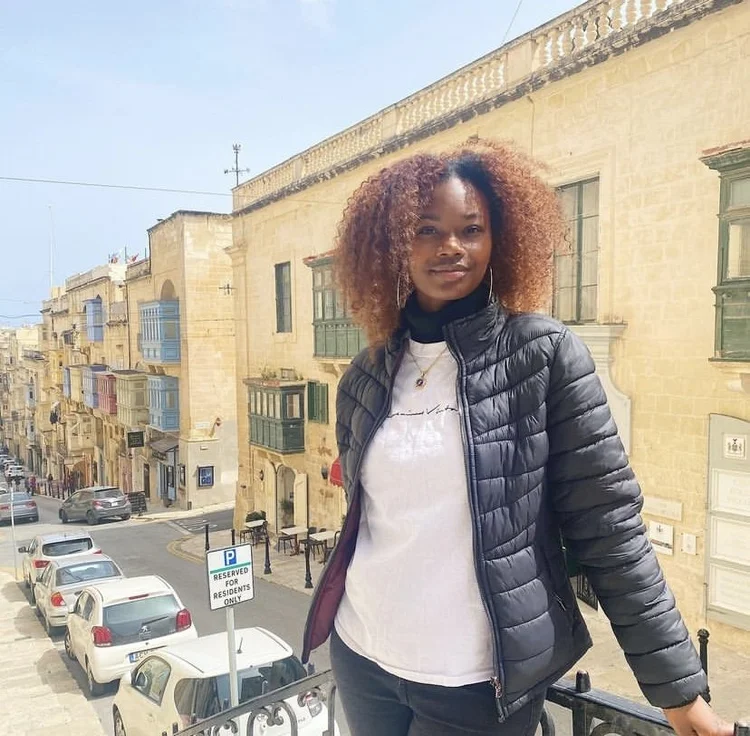
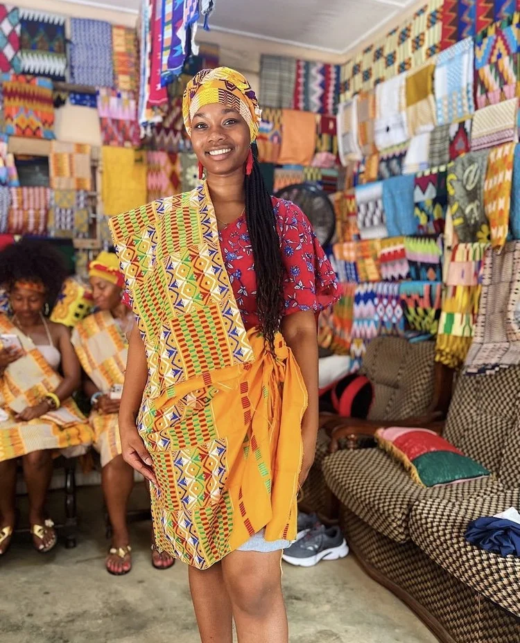
Experience
Oracle
• UX Designer, 2026
• UX Design Intern, 2025
Skills: Prototyping, wireframing, user flows, user research, interaction design
Children's National Hospital
Associate Graphic Designer, 2024
Skills: Typography, Layout Design, Web Design, Graphic Design, Adobe Creative Cloud, HTML/CSS, and WordPress
Gap Inc.
• User Experience Designer, 2022 — 2023
• User Experience Design Intern, 2021
Skills: User Interface Design, Usability Testing, Wireframing, Prototyping, Responsive Web Design
Elon University Global Education Center
Communication Design Intern, 2018 – 2021
Skills: Visual Design, Adobe Photoshop, Adobe Illustrator, Adobe InDesign, Typography, Marketing, Social Media
Live Oak Communications Agency
• Branding Executive, 2020
• Creative Content Producer, 2019 – 2020
Skills: Creative Strategy, Visual Design, Art Direction, Campaigns, Email Marketing, Branding